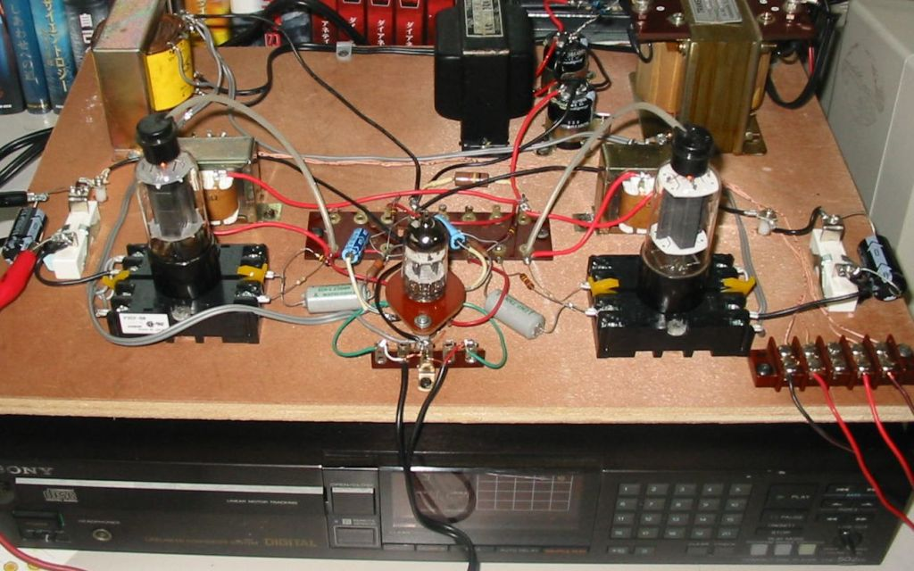
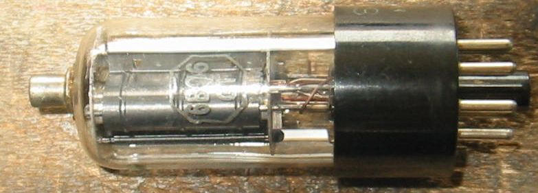
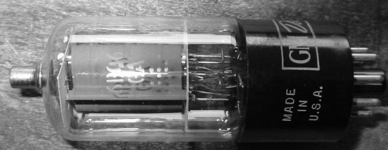
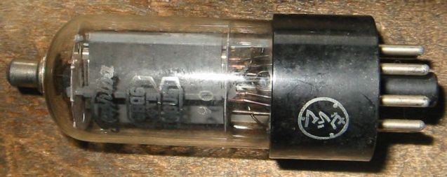
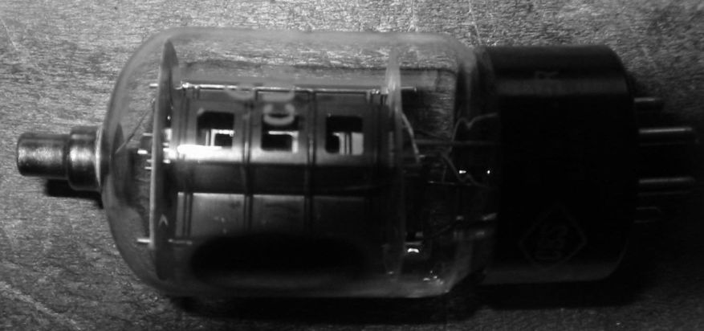
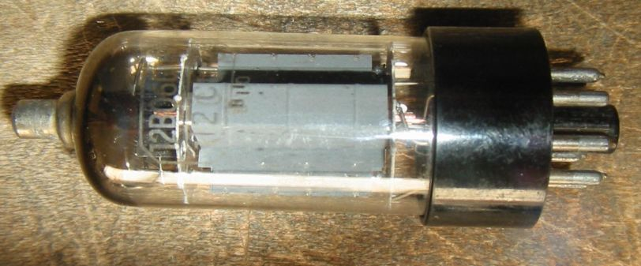
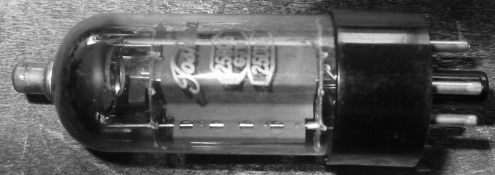
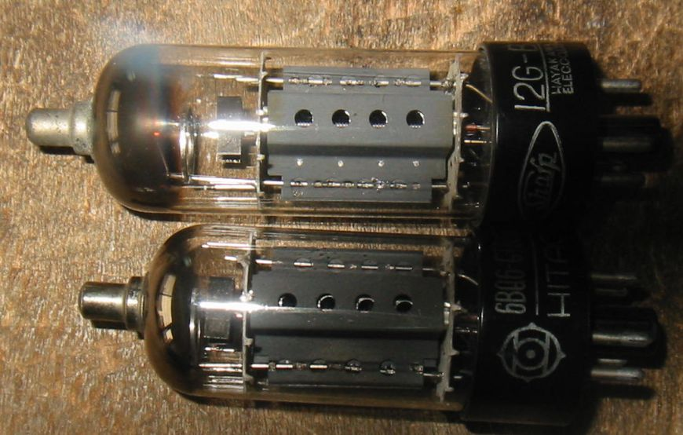

6BQ6シングル３結アンプの試作
水平出力管6BQ6がたくさんあるので、何とか活用できないがと考えていました。
何十年かぶりにアンプでも作ってみるかという考えが浮かび、ごく簡単なシングルアンプで、
球は6BQ6の３結、そうするとGMが5900マイクロモーでμ２（G1、G2間の増幅率）が4.3
したがってな内部抵抗rpは729Ω、何とかの有名な2A3のｒｐよりも低い。
ということで、ありあわせの部品を使って組み立てたのが写真のアンプです。
試作品なので木の板（Breadboard）のうえに組み立ててあります。CDプレーヤーかPCに
つないで使うので回路は超簡単です。手間とコストの割にはいい音だと感じています。
このアンプはその後、GTベースのいろいろな球の実験とか、出力トランスの実験に使い、
最終的には、E130Lと自作の1KΩ：8Ωの出力トランスの組み合わせで落ち着いています。

2010年４月１記載
いろいろな６BQ6
6BQ6Gというのがあったようですが、見たことがありません。
私の持っているもっとも古いものが6BQ6GTです。このSylvania製のものは、
プレートが丸みを帯びており、6V6をトッププレートにしたような形をしています。
他の6BQ6GTはプレートが箱形になっています。
6BQ6はゲッターがステム側についているので、ゲッターが消耗しきったように
見えるかもしれませんが、まだ使えるものもあります。ちなみにこれはエミッション
メーターで黄色と緑の間くらいです。

GM Delco 6BQ6GA

Toshiba 6BQ6GTB/6CU6 これはベースの部分にはマツダの名前がありますが、ガラスの部分には
Toshibaの名前がついています。

CBS 6CU6 これはほとんど６DQ6のような格好です。

Toshiba 12BQ6GTB/12CU6

Toshiba 25BQ6GTB/25CU6

Sharp 12G-B3とHITACHI 6BQ6-GTB/6CU6
この2つを比較するとまったく同じ材料から作られていることがわかると思います。
6BQ6-GTBの方は普通の6BQ6と同じサイズにするため管の上部が切り詰められています。

TV水平出力管のページに戻る